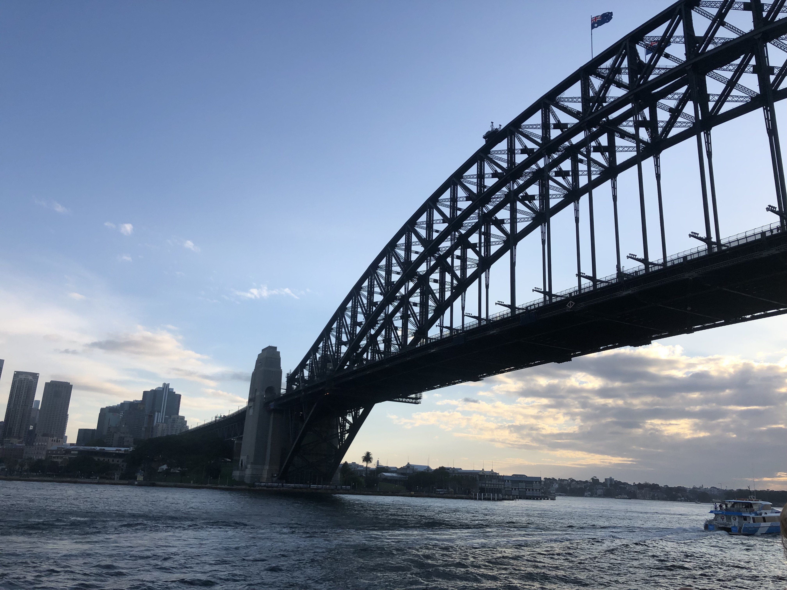
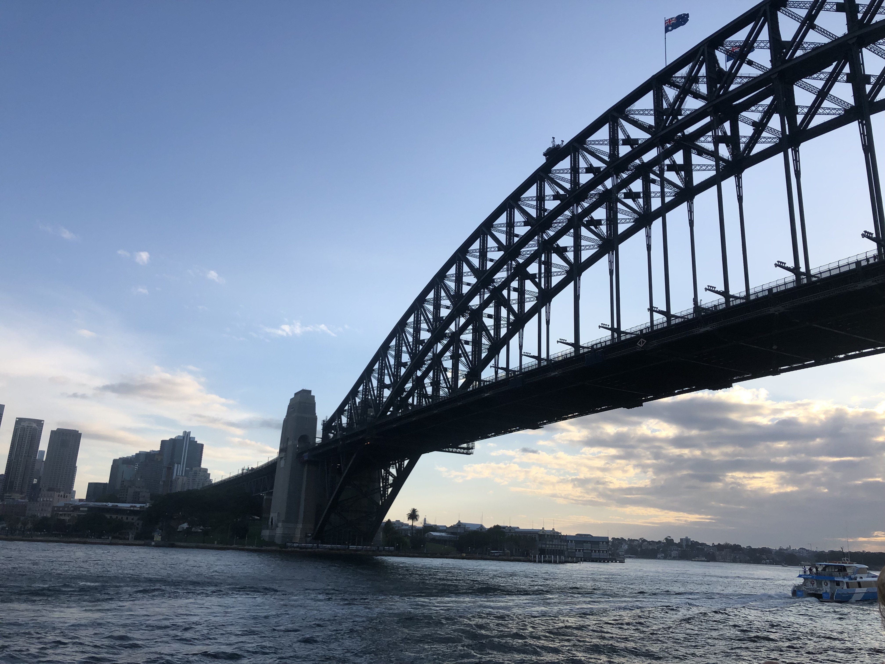

Throughout my time in Australia, I was able to visit several destinations throughout the East Coast. I spent the majority of my weeks at my home outside of Sydney but traveled to other locations for weekend destinations. Below I will include where I went at each location!
Gold Coast
My friends and I flew into the Gold Coast Airport and rented a car to drive up the coast to Surfers Paradise where we were staying. We flew into Coolangatta and drove through Kirra Beach, Miami Beach, Burleigh Heads, and Main Beach. Surfers Paradise was a perfect location for a group of young adults however, I would stay in Kirra Beach or Byron Bay if I returned! Surfers Paradise had restaurants, shopping, surfing, markets and more but it was not as relaxing as described. If you are looking to be in the action this location is for you!
My friends and I flew into the Gold Coast Airport and rented a car to drive up the coast to Surfers Paradise where we were staying. We flew into Coolangatta and drove through Kirra Beach, Miami Beach, Burleigh Heads, and Main Beach. Surfers Paradise was a perfect location for a group of young adults however, I would stay in Kirra Beach or Byron Bay if I returned! Surfers Paradise had restaurants, shopping, surfing, markets and more but it was not as relaxing as described. If you are looking to be in the action this location is for you!
Sydney
Enjoy your time strolling the many surrounding beaches of Bondi, Coogee, Manly, Bronte, Maroubra, and Palm Beach. Bondi Beach has the perfect combination of restaurants, clothing stores and a beautiful world famous beach. Sydney has so much to offer and I would reccomend at least four days to enjoy. The first day give yourself a tour of the city's famous attractions including the Opera House, Harbour Bridge, Mrs Macquarie's chair, the Queen Victoria building and more! After enjoy a tasty meal at Darling Harbour. To start the next day, escape the hustle of the city and enjoy the beautiful coastal walk starting at Coogee Beach and ending at Bondi Beach. Spend the afternoon enjoying the food and stores that the world famus Bondi Beach has to offer. Your third day will be back in Sydney with the Grounds of Alexandria. After, enjoy the high-end shopping and restaurants in downtown Sydney. To end your night, visit the Rocks in downtown Sydney. On your final day, relax by the beach or spend the day roaming the city! There are endless spots to see!
Enjoy your time strolling the many surrounding beaches of Bondi, Coogee, Manly, Bronte, Maroubra, and Palm Beach. Bondi Beach has the perfect combination of restaurants, clothing stores and a beautiful world famous beach. Sydney has so much to offer and I would reccomend at least four days to enjoy. The first day give yourself a tour of the city's famous attractions including the Opera House, Harbour Bridge, Mrs Macquarie's chair, the Queen Victoria building and more! After enjoy a tasty meal at Darling Harbour. To start the next day, escape the hustle of the city and enjoy the beautiful coastal walk starting at Coogee Beach and ending at Bondi Beach. Spend the afternoon enjoying the food and stores that the world famus Bondi Beach has to offer. Your third day will be back in Sydney with the Grounds of Alexandria. After, enjoy the high-end shopping and restaurants in downtown Sydney. To end your night, visit the Rocks in downtown Sydney. On your final day, relax by the beach or spend the day roaming the city! There are endless spots to see!
Melborune
If you are traveling in a group with young adults this bustling city is the place for you. With delicious restaurants, high-end stores and botiques and endless bars and dive bars, Melbourne is the perfect weekend getaway. Spend one day touring the city and enjoying the lanes of graffiti and street art. Take a tour of the muesums and surrounding stores. On the next day enjoy time away from the city by embarking on a wine tour in Yarra Valley or visiting the Brighton Beach Boxes. If you have time to kill, take a tour to the world famous 12 apostoles, the trip is long but worth the drive! Whether its snacking and drinking or shopping and relaxig with friends, Melbourne is an amazing city to visit.
If you are traveling in a group with young adults this bustling city is the place for you. With delicious restaurants, high-end stores and botiques and endless bars and dive bars, Melbourne is the perfect weekend getaway. Spend one day touring the city and enjoying the lanes of graffiti and street art. Take a tour of the muesums and surrounding stores. On the next day enjoy time away from the city by embarking on a wine tour in Yarra Valley or visiting the Brighton Beach Boxes. If you have time to kill, take a tour to the world famous 12 apostoles, the trip is long but worth the drive! Whether its snacking and drinking or shopping and relaxig with friends, Melbourne is an amazing city to visit.